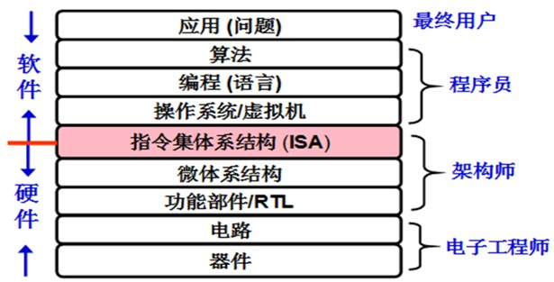

为什么要学习计算机系统基础
一知半解
你已经学过 程序设计基础 课程了, 对于C和C++程序设计已有一定的基础. 但你会发现, 你可能还是不能理解以下程序的运行结果:
数组求和
当len = 0时, 执行sum函数的for循环时会发生Access Violation, 即"访问违例"异常. 但是, 当参数len说明为int型时, sum函数能正确执行, 为什么?
整数的平方
若x和y为int型, 当x = 65535时, 则y = x*x = -131071. 为什么?
多重定义符号
在上述两个模块链接生成的可执行文件被执行时, main函数的printf语句打印出来的值是: d=0,x=1072693248. 为什么不是d=100,x=200?
奇怪的函数返回值
从fun函数的源码来看, 每次返回的值应该都是3.14, 可是执行fun函数后发现其结果是:
fun(0)和fun(1)为3.14fun(2)为3.1399998664856fun(3)为2.00000061035156fun(4)为3.14并会发生访问违例 这是为什么?
时间复杂度和功能都相同的程序
上述两个功能完全相同的函数, 时间复杂度也完全一样, 但在Pentium 4处理器上执行时, 所测时间相差大约21倍. 这是为什么? 猜猜看是copyij更快还是copyji更快?
站得高, 看得远
国内很多学校老师反映, 学完高级语言程序设计后会有一些学生不喜欢计算机专业了, 这是为什么? 从上述给出的例子应该可以找到部分答案, 如果一个学生经常对程序的执行结果百思不得其解, 那么他对应用程序开发必然产生恐惧心理, 也就对计算机专业逐渐失去兴趣. 其实, 程序的执行结果除了受编程语言的语法和语义影响外, 还与程序的执行机制息息相关. 计算机系统基础课程主要描述程序的底层执行机制, 因此, 学完本课程后同学们就能很容易地理解各种程序的执行结果, 也就不会对程序设计失去信心了.
我们还经常听到学生问以下问题: 像地质系这些非计算机专业的学生自学JAVA语言等课程后也能找到软件开发的工作, 而我们计算机专业学生多学那么多课程不也只能干同样的事情吗? 我们计算机专业学生比其他专业自学计算机课程的学生强在哪里啊? 现在计算机学科发展这么快, 什么领域都和计算机相关, 为什么我们计算机学科毕业的学生真正能干的事也不多呢? ...
确实, 对于大部分计算机本科专业学生来说, 硬件设计能力不如电子工程专业学生, 行业软件开发和应用能力不如其他相关专业学生, 算法设计和分析基础又不如数学系学生. 那么, 计算机专业学生的特长在哪里? 我们认为计算机专业学生的优势之一在于计算机系统能力, 即具备计算机系统层面的认知与设计能力, 能从计算机系统的高度考虑和解决问题.
随着大规模数据中心(WSC)的建立和个人移动设备(PMD)的大量普及使用, 计算机发展进入了后PC时代, 呈现出"人与信息世界及物理世界融合"的趋势和网络化, 服务化, 普适化和智能化的鲜明特征. 后PC时代WSC, PMD和PC等共存, 使得原先基于PC而建立起来的专业教学内容, 已经远远不能反映现代社会对计算机专业人才的培养要求, 原先计算机专业人才培养强调"程序"设计也变为更强调"系统"设计.
后PC时代, 并行成为重要主题, 培养具有系统观的, 能够进行软, 硬件协同设计的软硬件贯通人才是关键. 而且, 后PC时代对于大量从事应用开发的应用程序员的要求也变得更高. 首先, 后PC时代的应用问题更复杂, 应用领域更广泛. 其次, 要能够编写出各类不同平台所适合的高效程序, 应用开发人员必需对计算机系统具有全面的认识, 必需了解不同系统平台的底层结构, 并掌握并行程序设计技术和工具.
下图描述了计算机系统抽象层的转换.

从图中可以看出, 计算机系统由不同的抽象层构成, "计算"的过程就是不同抽象层转换的过程, 上层是下层的抽象, 而下层则是上层的具体实现. 计算机学科主要研究的是计算机系统各个不同抽象层的实现及其相互转换的机制, 计算机学科培养的应该主要是在计算机系统或在系统某些层次上从事相关工作的人才.
相比于其他专业, 计算机专业学生的优势在于对系统深刻的理解, 能够站在系统的高度考虑和解决应用问题, 具有系统层面的认知和设计能力, 包括:
- 能够对软, 硬件功能进行合理划分
- 能够对系统不同层次进行抽象和封装
- 能够对系统的整体性能进行分析和调优
- 能够对系统各层面的错误进行调试和修正
- 能够根据系统实现机理对用户程序进行准确的性能评估和优化
- 能够根据不同的应用要求合理构建系统框架等
要达到上述这些在系统层面上的分析, 设计, 检错和调优等系统能力, 显然需要提高学生对整个计算机系统实现机理的认识, 包括:
- 对计算机系统整机概念的认识
- 对计算机系统层次结构的深刻理解
- 对高级语言程序, ISA, OS, 编译器, 链接器等之间关系的深入掌握
- 对指令在硬件上执行过程的理解和认识
- 对构成计算机硬件的基本电路特性和设计方法等的基本了解等 从而能够更深刻地理解时空开销和权衡, 抽象和建模, 分而治之, 缓存和局部性, 吞吐率和时延, 并发和并行, 远程过程调用(RPC), 权限和保护等重要的核心概念, 掌握现代计算机系统中最核心的技术和实现方法.
计算机系统基础课程的主要教学目标是培养学生的系统能力, 使其成为一个"高效"程序员, 在程序调试, 性能提升, 程序移植和健壮性等方面成为高手; 建立扎实的计算机系统概念, 为后续的OS, 编译, 体系结构等课程打下坚实基础.
实践是检验真理的唯一标准
旷日持久的计算机教学只为解答三个问题：
- (theory, 理论计算机科学) 什么是计算?
- (system, 计算机系统) 什么是计算机?
- (application, 计算机应用) 我们能用计算机做什么?
除了纯理论工作之外, 计算机相关的工作无不强调动手实践的能力. 很多时候, 你会觉得理解某一个知识点是一件简单是事情, 但当你真正动手实践的时候, 你才发现你的之前的理解只是停留在表面. 例如你知道链表的基本结构, 但你能写出一个正确的链表程序吗? 你知道程序加载的基本原理, 但你能写一个加载器来加载程序吗? 你知道编译器, 操作系统, CPU的基本功能, 但你能写一个编译器, 操作系统, CPU吗? 你甚至会发现, 虽然你在程序设计课上写过很多程序, 但你可能连下面这个看似很简单的问题都无法回答:
!终极拷问
当你运行一个Hello World程序的时候, 计算机究竟做了些什么?
很多东西说起来简单, 但做起来却不容易, 动手实践会让你意识到你对某些知识点的一知半解, 同时也给了你深入挖掘其中的机会, 你会在实践过程中发现很多之前根本没有想到过的问题(其实科研也是如此), 解决这些问题反过来又会加深你对这些知识点的理解. 理论知识和动手实践相互促进, 最终达到对知识点透彻的理解.
目前也有以下观点:
目前像VS, Eclipse这样的IDE功能都十分强大, 点个按钮就能编译, 拖动几个控件就能设计一个GUI程序, 为什么还需要学习程序运行的机理?
PhotoShop里面的滤镜功能繁多, 随便点点就能美化图片, 为什么还需要学习图像处理的基本原理?
像"GUI程序开发", "PhotoShop图片美化"这样的工作也确实需要动手实践, 但它们并不属于上文提到的计算机应用的范畴, 也不是计算机本科教育的根本目的, 因为它们强调的更多是技能的培训, 而不是对"计算机能做什么"这个问题的探索, 这也是培训班教学和计算机本科教学的根本区别. 但如果你对GUI程序运行的机理了如指掌, 对图像处理基本原理的理解犹如探囊取物, 上述工作对你来说根本就不在话下, 甚至你还有能力参与Eclipse和PhotoShop的开发.
而对这些原理的透彻理解, 离不开动手实践.
宋公语录
学汽车制造专业是要学发动机怎么设计, 学开车怎么开得过司机呢?